China EOR in 2026: What Foreign Employers Should Know Before Hiring in China
Key takeaways
- China EOR can work as a limited market-entry bridge, but it should not be treated as a plug-and-play substitute for a local operating structure.
- The core compliance issue is not payroll convenience alone; it is whether the factual employment relationship matches the paper structure.
- Foreign employers should test role scope, management control, payroll/IIT handling, and exit risk before using an EOR model in China.
- EOR becomes harder to defend as headcount, control intensity, and revenue relevance increase.
- The cleanest decision rule is simple: use EOR for early, narrow, transitional hiring — not as a long-term workaround once China operations start to scale.
Why this matters now
Foreign companies entering China often want speed before certainty. They may need one local hire before entity setup, a short-term bridge while restructuring, or a way to test the market without building a full China platform on day one.
That is where EOR becomes commercially attractive. It promises faster onboarding, lower setup burden, and a way to begin hiring before a long-term structure is approved.
But in China, the legal and operational reality is more complicated than the global EOR label suggests. In many jurisdictions, EOR is treated as a relatively standardized expansion tool. In China, it is better understood as a risk-managed hiring arrangement whose suitability depends on the role, the city, the level of operational control, the payroll and tax chain, and the company’s actual business footprint.
For foreign employers, the real question is not whether “China EOR” exists in the market. It does. The more important question is whether the arrangement is structurally aligned with what the company is actually doing in China.
What “China EOR” usually means in practice
In commercial terms, China EOR usually refers to an arrangement where a local provider hires an employee under its own local structure and supports the foreign client through payroll administration, benefits handling, employment documents, and day-to-day coordination.
For foreign companies, that can sound straightforward. In practice, the underlying setup may not map neatly to the global EOR concept used in many international expansion playbooks. Depending on the provider and the factual structure, the arrangement may resemble labor dispatch, employment outsourcing, staffing support, or a hybrid local services model.
That distinction matters because in China, compliance outcomes depend less on what a provider calls the model and more on how the relationship operates in reality.
A foreign employer may think it is buying a clean hiring wrapper. In reality, it may be entering a local structure whose risk profile depends on who directs the employee, who carries business risk, how the role is positioned, and how consistently the arrangement is documented and administered.
Why foreign employers use EOR in China
The commercial appeal is easy to understand.
Some foreign companies want to test demand before deciding whether China justifies a Wholly Foreign-Owned Enterprise or other long-term local structure. Others need one or two people on the ground quickly in sourcing, support, market development, or coordination roles. In some cases, the company is transitioning between structures and wants to avoid a hiring gap.
In those situations, EOR can provide a useful bridge. It may reduce setup friction, speed up hiring, and allow a business to build limited local presence while preserving flexibility.
The problem is not the model itself. The problem is when a limited market-entry tool is mistaken for a durable operating structure.
The first issue is not payroll — it is employment substance
Foreign employers often start with payroll questions. Can salary be paid locally? Can individual income tax be withheld correctly? Can social insurance obligations be handled? Those are important questions, but they are not the first question.
The first question is whether the arrangement reflects the real nature of the employment relationship.
If the employee is effectively integrated into the foreign company’s business, reports into overseas management, takes day-to-day direction from the foreign company, and performs core work under that company’s control, then the local employment wrapper on paper may not tell the whole story.
That does not mean every EOR arrangement fails. It means the structure should be tested against actual operating facts:
- who directs daily work,
- who sets targets and reviews performance,
- who controls compensation changes,
- who bears commercial and operational risk,
- and which entity is functioning as the true employer in practice.
In China, this is not simply a paperwork issue. It is a substance-and-control issue.
Where a China EOR model can make sense
A China EOR model is generally easier to justify when the use case is narrow, transitional, and tightly scoped.
That may include early-stage market testing, temporary local representation, limited support functions, or short-term hiring before entity setup. In these scenarios, the arrangement can operate as a bridge rather than a disguised substitute for long-term local establishment.
The narrower the role and the clearer the transition logic, the easier it is to align the legal story with the commercial reality. This is especially true where the foreign company is not yet deeply embedded in China and is still evaluating whether a larger local footprint is commercially justified.
Where the risk profile becomes harder to manage
Risk rises when EOR is used as a long-term substitute for a compliant local operating structure.
That usually happens when headcount grows, local responsibilities deepen, revenue-relevant work becomes more important, or management control shifts heavily to the foreign company. The same is true where roles involve sensitive external representation, more complex incentive structures, or sector-specific exposure.
At that point, the key issue is no longer whether the provider can process payroll and issue local contracts. The key issue is whether the overall structure still makes sense in light of the company’s real footprint in China.
This is where many arrangements begin to drift. On paper, the model still looks efficient. In practice, the gap between contract form and business reality starts to widen.
Payroll, IIT, and local administration still require close attention
Even where the overall structure is commercially defensible, payroll and tax administration still need careful attention.
A China EOR arrangement must still account for individual income tax withholding, social insurance treatment where applicable, local filing practice, benefits administration, compensation structure, and termination payout handling. These issues are not minor. If payroll records, tax treatment, role descriptions, and contract language do not line up, the arrangement can become much harder to defend later.
This is where foreign companies often overestimate the strength of a generic “global EOR” offering. A provider may be able to issue contracts and payslips, but that does not automatically mean the underlying local employment and filing model is robust.
For foreign employers, the practical lesson is straightforward: do not buy China EOR as a single product promise; evaluate it as a chain of local compliance controls.
EOR does not eliminate broader operating or tax exposure
Another common misunderstanding is that an EOR model solves all broader China structural questions. It does not.
An EOR arrangement may reduce setup burden, but it does not automatically remove exposure linked to how the foreign company actually operates in the market. If local staff are tied to business execution, client-facing work, negotiations, or revenue-supporting functions, foreign employers may still need to examine the wider legal, tax, and governance implications of that presence.
That is why companies should separate three questions that are often bundled together:
- how to hire,
- how to operate,
- and how to localize business activity.
These are related decisions, but they are not the same decision.
How foreign employers should evaluate an EOR provider in China
The right question is not whether a provider “offers EOR in China.” Most providers will say yes.
The more useful question is what exact local model is being used, and how it holds up by role, city, and use case.
A credible provider should be able to explain:
- which local entity employs the worker,
- how the contractual chain is structured,
- what role categories are appropriate or inappropriate,
- how IIT and payroll are handled in practice,
- how termination cases are managed,
- what assumptions vary by location,
- and at what point the client should move to a different structure.
If the discussion stays at the level of speed, flexibility, and global platform convenience, that is not enough for China.
When it is time to move beyond EOR
For most foreign employers, EOR works best as a bridge, not an endpoint.
Once local hiring expands, management complexity rises, business dependence on China staff increases, or dispute and tax exposure becomes harder to manage, the company should reassess whether the original structure still fits the actual operating model.
That reassessment should happen before the arrangement becomes difficult to unwind. In China, the cost of waiting too long is not only compliance risk. It is also governance inefficiency, blurred accountability, and operational friction.
At that stage, the question is no longer whether EOR remains possible. The question is whether it remains rational.
A practical decision rule for foreign employers
The clearest working rule is this:
Use China EOR when the local presence is early, narrow, and transitional. Do not rely on it as a long-term substitute for a real China operating structure once headcount, control intensity, or commercial importance begins to scale.
That is the dividing line.
Companies that use EOR as a temporary entry mechanism often gain speed and flexibility. Companies that treat it as a permanent workaround often discover that employment, payroll, tax, and dispute risks accumulate faster than expected.
What to do before moving ahead
Before proceeding with a China EOR arrangement, foreign employers should complete a basic pre-decision review.
Clarify the real use case
Define whether the hire is for market testing, sourcing, support, research, technical coordination, or commercial development. The narrower and clearer the role, the easier it is to assess fit.
Test the control model
Map who directs the employee’s daily work, who evaluates performance, who approves compensation changes, and who controls practical execution. If the foreign company is acting as the true employer in all substantive respects, the structure requires closer review.
Review payroll and tax handling in detail
Do not stop at salary processing. Confirm local IIT handling, social insurance assumptions, benefits administration, compensation breakdown, and consistency across documents and filings.
Check the exit path before the entry path
A structure that is easy to start but hard to unwind is not a clean structure. Foreign employers should understand termination exposure, payout treatment, recordkeeping requirements, and dispute posture before hiring begins.
Final thought
China EOR can be useful, but it should not be oversimplified. It is not a universal shortcut, and it is not a substitute for understanding how local employment, tax, and operating risk actually work.
Used carefully, it can help a foreign company enter the market with flexibility. Used casually, it can create a false sense of simplicity in a market that rarely rewards oversimplification.
For foreign employers, the real question is not whether China EOR is available. It is whether the arrangement is structurally aligned with what the company is actually doing in China.
Need help assessing whether China EOR fits your China hiring plan?
If your business is evaluating local hiring in China, the right answer depends on your role type, city, management structure, payroll model, and longer-term market plan. A surface-level EOR comparison is usually not enough. A role-by-role and structure-by-structure review is often the better starting point.
Need local employment support in China?
If you need a compliance-first partner for hiring, payroll, and risk controls in China, China-Payroll.com can help evaluate the right setup.
Image Prompt Pack
Create a 16:9 hero image for article title: 'China EOR in 2026: What Foreign Employers Should Know Before Hiring in China'. Scene: global operations team evaluating workforce model options for China market entry. Include motifs: decision matrix, org chart, leg…